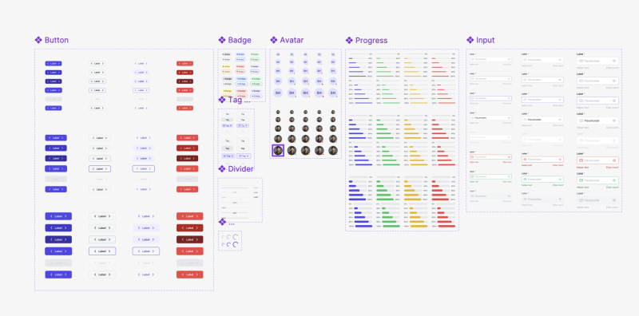

FlowFund
Freelancers don't have a salary. Their income is lumpy, unpredictable, and anxiety-inducing. Most budgeting apps are built for people with steady paychecks. FlowFund isn't.
View case studyProduct Designer Hyderabad
I'm Shiva Ram — a product designer who works at the intersection of user psychology and business logic. I don't just make things look good. I make them work well enough that the business notices.
Freelancers don't have a salary. Their income is lumpy, unpredictable, and anxiety-inducing. Most budgeting apps are built for people with steady paychecks. FlowFund isn't.
View case study
Clinicians make life-affecting decisions under pressure. Badly designed dashboards don't just waste time — they create risk. OnaWave needed to show 28 days of patient data clearly, without a single unnecessary click.
View case study27+ screens with exhaustive state design — 15 onboarding states, 7 Today Tab states, Someday queue, and Milestone celebrations. Built for the miss day, not just the win day.
View case study
I kept building the same button in every project. I wanted a system that made the right decision the default one. 20+ components, full token architecture, Web/iOS/Android.
View case study